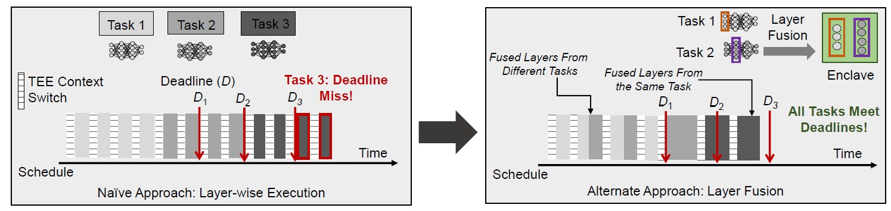

Trusted execution · Real-time AI
Confidential DNN execution inside TrustZone
Scheduling and task-fusion methods for executing DNN workloads inside Arm TrustZone while controlling secure-memory and context-switch overheads.
- Analytical schedulability models
- Secure-memory-aware deployment
- Reduced TEE context switches